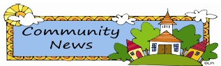
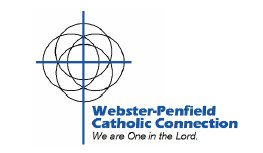
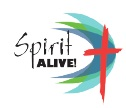

|
|

Lenten Fish Dinners
Served every Friday during Lent starting Friday,
February 19 5:00-7:00 PM at St. Rita‘s Church. Each Friday during
Lent Fish Dinners will be served from 5:00-7:00pm in the Parish Center
Gym. It is staffed by a wonderful team of volunteers sharing their stewardship
of time and talent. Fried or Baked Haddock are available as well as Cheese
Pizza for those who do not care for fish! Fish dinners include coleslaw,
french fries and a roll ~ $9 for adults and $8 for Seniors. Children‘s
portions are available for $5 - as well as Soft Drinks, Milk, Coffee,
Tea, and Ice Cream cups. Come in for great sit down table service or take
out.
Married Couples
Great marriages are blessed by God in Heaven,
but they are made here on the Earth. There is a wonderful opportunity
to make your good marriage great, to reignite the romance in your relationship,
to place God fully in your marriage. Come to the next Worldwide Marriage
Encounter Weekends, held on March 19-21, 2010 weekend at the Quality Inn
in Hamburg, NY (in the Buffalo Area) .
To sign-up for the Weekend or for more information call Robert and Beth
Knopf at 877-NYS-WWME (877-697-9963) or visit www.wwme-wny.org.
COUPLE-TO-COUPLE LEAGUE CLASSES
for fertility awareness, understanding of fertility
cycles, and natural child spacing. Valuable information for single women,
engaged and married couples. Register online at
www.ccli.org. Dates and Time: 1st Meeting: Monday, March 15, 2010
06:30PM; 2nd Meeting: Monday, April 12, 2010 06:30PM; 3rd Meeting: Monday,
May 10, 2010 06:30PM at 76 Stearns Rd, Churchville NY 14428,. Teaching
Couple: Alan & Cheryl Hitchings. For more information call (585) 293-7180
or email: cheryl.hitchings@gmail.com.
Childcare is available for your children over age 2 but please let us
know if you'll need it .
The Importance of Rest
Presented by: Fr. Tom Barrett, C.Ss.R. "Come
away with me . . . and get some rest.." Mark 6:31 Our Monthly Day
of Prayer At Notre Dame Retreat House 5151 Foster Rd. Canandaigua, NY
14424 When: Tuesday, March 16,
2010 Time: Program begins at 9:30am
(coffee & pastries at 9:00am) Delicious Lunch at 12:00noon Sacrament
of reconciliation at 1:00pm Mass at 2:00pm. Reserve a spot today by calling
585-394-5700. There is a $15.00 fee.
Mercy Outreach
Center
The Mercy Outreach Center is a ministry overseen by the Sisters of Mercy.
We provide space for volunteer physicians, nurse practitioners, chiropractors,
and dentists to care for the uninsured or underinsured. We are desperately
looking for more doctors and nurse practitioners to volunteer just one
or more days a month to help us out. If you can, please contact Vicki
Kirsch, RN, BSN at 383-0729 (home) or 288-2634 (MOC).
An invitation to "Spring into Action"!
Now that the worst of our winter is over, we look forward to getting outside
and taking care of things we may have neglected. Some of your elderly
neighbors may need a ride to do these simple, but necessary things...like
a stop at the pharmacy...a visit to the doctor...a trip to the grocery
store. Can you help? If you have a couple of hours a week, or even a couple
of hours a month, consider being a volunteer driver. You can select your
geographic area and the times you wish to drive. You will be provided
with training, and supplemental accident and liability insurance. You
may receive a discount on your automobile insurance. To learn more about
becoming a volunteer driver, call Sr. Anne Guerin at 244-8400 ext 142
or email, aguerin@lifespan-roch.org.
Wedding Jubilee Mass.May 16, 2010
Bishop Matthew Clark will preside at a Wedding Jubilee Mass to honor couples
who have been married 25 years or more on Sunday May 16th at 2PM at Sacred
Heart Cathedral in Rochester. A reception will follow the Mass to honor
the attendees. If you would like an invitation to this Mass please send
your name and address to Sylvia Mancuso at smancuso@dor.org
or call her at 328-3228 ext. 1295.
WPCC Parish Partnership
Experiencing
Prayer:
A Prayer Fair
Come and listen to Sr. Mary Louise Heffernan, SSJ, as she shares her wisdom
on the many styles of prayer on Sat., Oct. 24, at 9 AM, at St. Paul‘s
Church. From 10 – Noon, you can choose 2 sessions from the following
prayer styles to try out; Prayer Walking by Sr. Jody Kearney, RSM; Meditation
by Sr. Mary Louise Heffernan, SSJ; Prayer Journaling by Donna Fitch; and
Praying with Icons by Fr. Fred Helfrich. The event is free but registration
is required through your Parish Office and due by Oct. 1
Help is needed one Saturday morning a month, distributing
food at the new Angel Food Ministries location
in the Cathedral Narthex, beginning in September. Angel Food is a monthly
program providing low cost food to struggling families. Contact: Jim Martel,
jkmhnc1998@yahoo.com.
All Star Scholars, a tutoring program
for 3rd graders held in Holy Rosary Rectory, needs volunteers on Wednesdays,
from 2:30-5:00 pm, starting in September. Contact: Judy Borrelli, jaborrelli@hotmail.com.
Help with tutoring adults and children
(1-on-1) with homework and reading skills, is needed on Thursdays, from
5-6 pm, at Sacred Heart Rectory Hall, starting in September. Contact:
Kathy LaBue, labue1@frontiernet.net.
Additional opportunities:
Health Outreach - An outlet for health
agencies to distribute health information to the Maplewood Community,
held at Mary's Place on Thursdays and Saturdays from 10-2 pm. If you have
information to share, contact: Kathy LaBue, labue1@frontiernet.net.
Just faith Study -
The Cathedral Community invites us to join them in a 30 week program on
social justice, Thursdays, beginning Sept. 17. Contact: Kathy LaBue, labue1@frontiernet.net.
|
A Lifeline for Marriage
Retrouvaille (pronounced retro-vi, meaning
rediscovery) has helped couples through difficult times in their marriages
for over 30 years.If you think your marriage has become unloving and uncaring,
if your relationship has grown cold and distant, if you are thinking of
separation or divorce, or you are already separated or divorced but want
to try again, then the Retrouvaille program may help you.
This non-profit Catholic marriage-help
program had the Pope's blessing at their international meeting in Rome
in 2008. It has helped tens of thousands of couples experiencing marital
difficulty at all levels - from frustration to separation. For information
about or to register for the spring program beginning with a weekend April
9-11, at Notre Dame Retreat House in Canandaigua,
It is a three month program which includes
a weekend experience and seven Saturday afternoon sessions. The next program
will be offered the weekend of April 9-11, at the Notre Dame Retreat House
in Canandaigua, NY. Follow-up sessions will be offered in Rochester. For
registration or for further information,
please call 585-293-1552 or visit the web
site at www.HelpOurMarriage.com
All inquiries are confidential.
Save Money and
Help Shepherd Home – a “Win Win!”
The Shepherd Home spring on-line auction is underway – check it out
at www.shepherdhome.cmarket.com
. Find great deals on items like restaurant dinner certificates, salon
services, fitness, event tickets and a birthday party for ten children.
New items are being added every day, so it pays to check back frequently.
The on-line auction will remain open until April 5, 2010 at 9:00 PM. Save
money, have fun and support compassionate hospice care in Penfield!
Shepherd Home Gala Promises Fabulous Fifties Fun!
If you enjoy the music, the fads, the nostalgia from the fun loving 1950‘s
you‘ll enjoy Shepherd Home‘s Fabulous Fifites Spring Gala, Saturday,
April 10 at 6pm at Midvale Country
Club in Penfield.
Gala attendees will enjoy both a silent auction and live auction, a buffet
dinner, '50s music by DJ Mike Vickers of Legends 102.7FM, dancing and
'50‘s themed surprises. Dress is 1950‘s attire or black-tie
optional. Master of Ceremonies will be John Kucko of News 8 and Fox Rochester
TV.
Tickets are $95. Proceeds benefit the Shepherd Home, a comfort care facility
in Penfield that provides residential hospice care to the terminally ill
at no charge. Shepherd Home relies on generous contributions from the
community and the efforts of more than 100 volunteers. For more information
see www.shepherdhome.org or
call 585-381-0890. Thanks for your support!!!
Focus Pregnancy
Help Center
We need more prayerful people on Tuesday & Thursday¡¦s
in front of Planned Parenthood on University Avenue. We also need counselors
in the Focus Pregnancy Help Center¡Xtraining provided.
Contact Mary Jost for more details at 585-218-4051.
The Xavier Society for the Blind
Do you know someone who has poor vision or is blind? Do you know someone
who has trouble holding a magazine or book? The Xavier Society for the
Blind has religious material in Braille, large print and audio CD’s
at no charge. For more information, call 1-800-637-9193 or visit them
on the web at www.xaviersocietyfortheblind.org
Diocese of Rochester Spirit Alive
Looking
for ways to help your family grow in
faith? Visit www.rochesterspiritalive.org
for some simple ideas. Don‘t know
how to make the God connection? Visit for some good ways to make time
for God.
St. Bernards Spring Offerings
For those considering beginning theology or
ministry studies at St. Bernard¡¦s, a new scholarship is
available for first time students. This coming term, starting in January,
several ¢wstarter courses¡ü are scheduled: Introduction
to New Testament, Introduction to Hebrew Bible, Orientation to Theology.
Why not make an appointment to talk with someone about beginning your
studies by calling 585-271-3657 extension 289 or visit our website at
www.stbernards.edu.
|